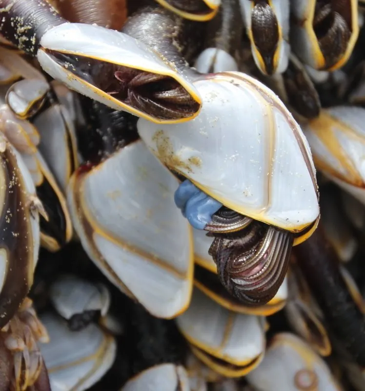

甲壳动物 · 动物界
茗荷儿 Lepas anatifera

附着在漂浮物和船体上的有柄藤壶，壳板呈灰白色，肉柄细长，随洋流漂流，常成串挂在浮木、塑料和鲸类身上。
- 分类
- 门节肢动物门纲软甲纲目有柄目科茗荷科属茗荷属
- 栖息环境
- 漂浮的浮木、塑料垃圾、船体和鲸类体表
- 地理分布
- 全球温暖海域，随洋流广泛漂流
- 保护级别
- IUCN 暂无评估；中国未列入国家重点保护名录
物种志
茗荷儿壳板长 3–5 cm，由五块灰白色壳板组成，壳口边缘呈橙红色，肉柄细长而柔韧，呈深褐色；它靠肉柄附着在漂浮物上，壳板可以开合，伸出蔓足滤食。
它分布于全球温暖海域，常附着在浮木、塑料垃圾、船体和鲸类身上，随洋流漂流，是典型的漂浮生物群落成员。茗荷儿涨潮或水流经过时伸出蔓足滤食浮游生物，退潮或受扰时紧闭壳板。它的附着会增大船体阻力，也被视为污损生物；大量塑料垃圾为它提供了新的附着基底，可能影响其扩散范围。它的肉柄能弯曲，使壳板朝向水流，幼体浮游期结束后寻找漂浮物附着，鲸类身上的茗荷儿常随宿主迁移。目前 IUCN 暂无评估；中国未列入国家重点保护名录。
形态与习性
- 食性滤食浮游生物
- 壳长3–5 cm
- 识别灰白色壳板，肉柄细长呈深褐色
- 习性附着漂浮物，随洋流漂流
- 繁殖幼体浮游后寻找漂浮物附着
- 影响附在船体上增大阻力，属污损生物
趣味知识
- 茗荷儿靠一根细长的肉柄挂在浮木或船底，像一串小鹅颈。
- 它属于有柄藤壶，和固定在岩石上的藤壶是近亲。
- 塑料垃圾漂到海上后，也成了茗荷儿新的附着材料。